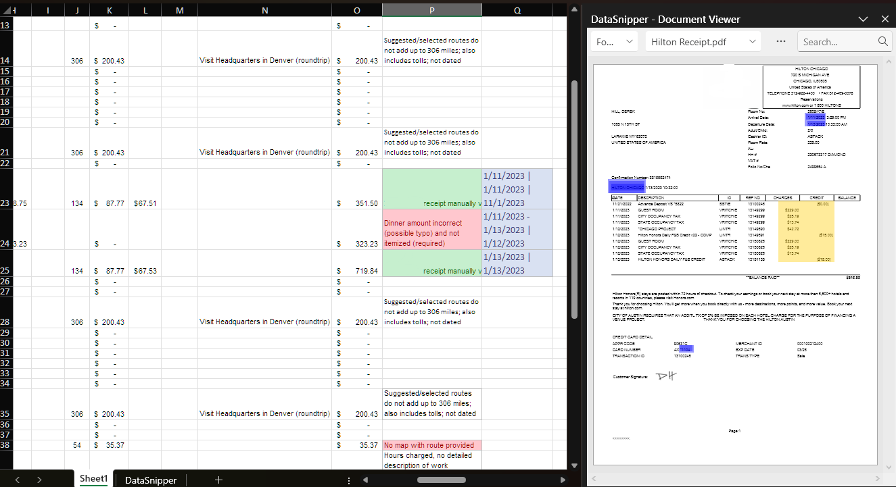
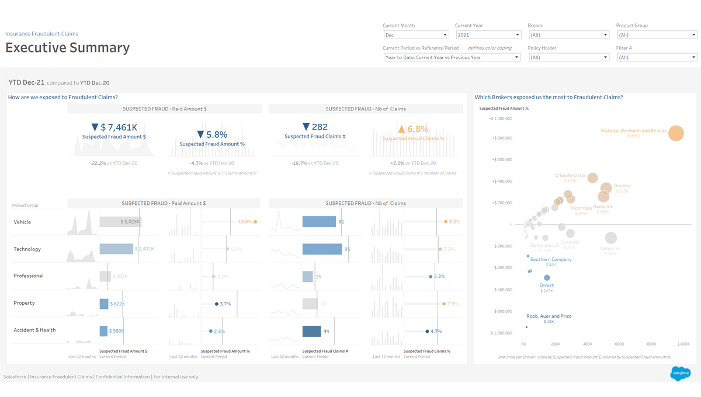

Projects
A selection of hands-on work applying audit and analytics tools to real accounting problems.

DataSnipper
Expense Report Analysis
Used DataSnipper to review a set of expense reports, matching reported amounts to supporting documents and flagging items that didn't tie out. The project showed me how audit software can speed up testing while keeping a clear evidence trail for every conclusion.

Tableau
Fraud Risk Dashboard
Explored a Tableau fraud risk dashboard built on a demo company's data, using filters and visuals to spot unusual patterns and higher-risk transactions. It gave me practice reading a dashboard the way an auditor would, to decide where to look closer.